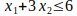
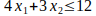
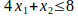

For each of the following constraints, draw a separate graph to show the non-negative solution that satisfy this constrains.
- 
- 
- 
- Now combine these constrains into a single graph to show the feasible region for entire set of functional constrains plus non-negative constraints.